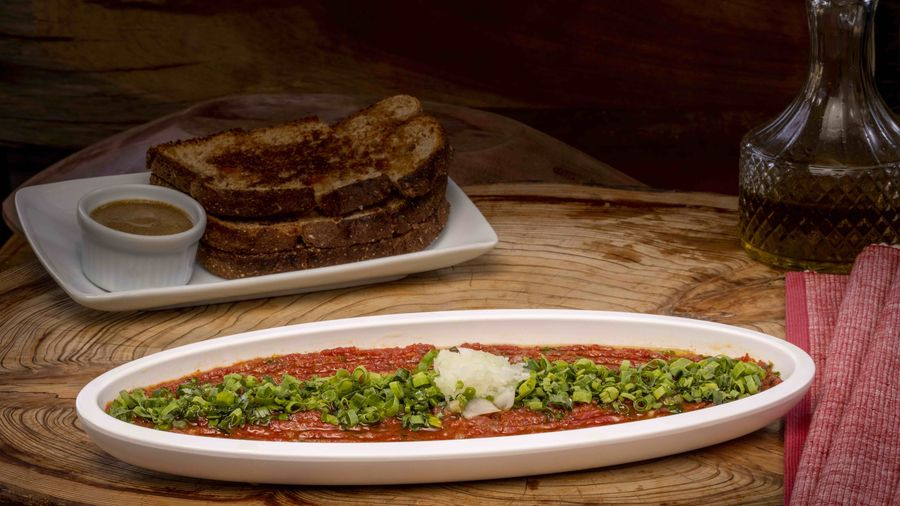

O que é Carne de Onça
Broa de centeio, carne bovina fresca e o tempero que faz a diferença.

Quem é de fora ouve o nome e trava. Quem é de Curitiba já sabe: não tem onça nenhuma no prato.
A Carne de Onça é uma fatia de broa coberta com carne bovina crua, temperada e servida fria. No Ushuaia, são 200 gramas de patinho fresco, com sal, cebola, cebolete orgânica, páprica, um fio de cachaça e azeite de oliva. Vai com mostarda escura e mais azeite por cima. A lista cabe em duas linhas — e é exatamente por isso que ela é difícil de fazer bem.
Por que a carne é crua
Porque o prato é assim, e sempre foi. É primo do steak tartare francês e do mett alemão, e chegou aqui pela mesma porta que trouxe tanta coisa à mesa curitibana: a imigração.
Carne crua não admite disfarce. Não tem molho para corrigir, não tem fogo para esconder o ponto. Se a carne não é boa, você percebe na primeira mordida. Por isso o corte é o patinho, magro e limpo, e por isso a procedência importa mais aqui do que em qualquer prato que vá ao fogo.
A broa não está ali por acaso
A broa de centeio é densa e levemente ácida. Ela segura a carne sem encharcar e equilibra a gordura do azeite. Trocar por pão branco não é uma variação — descaracteriza o prato.
No Ushuaia existem três broas, uma para cada versão: centeio na Original, castanha levemente tostada na autoral do Piano Bar e sem glúten na versão para celíacos. Na Vegana, você escolhe no pedido.
De onde vem o nome
A explicação mais contada é a mais simples: a cebolinha fica presa entre os dentes de quem come, e o sujeito termina o prato sorrindo feito uma onça. Há quem conte outra versão — e faz sentido que haja. Prato de boteco com quase um século de história costuma ter mais de uma certidão de nascimento.
Como se come
Na mão, em uma ou duas mordidas, sem cerimônia. E gelada: a carne sai refrigerada e vai direto para a mesa. Não é prato para esperar esfriar nem para esquentar.
Escrevi sobre esses dois reconhecimentos no outro post daqui do blog.
Quer provar?